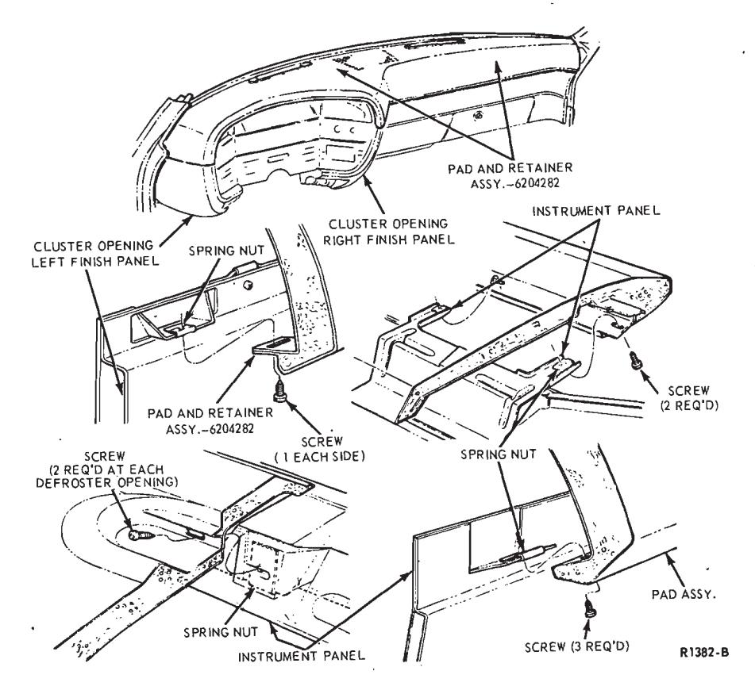
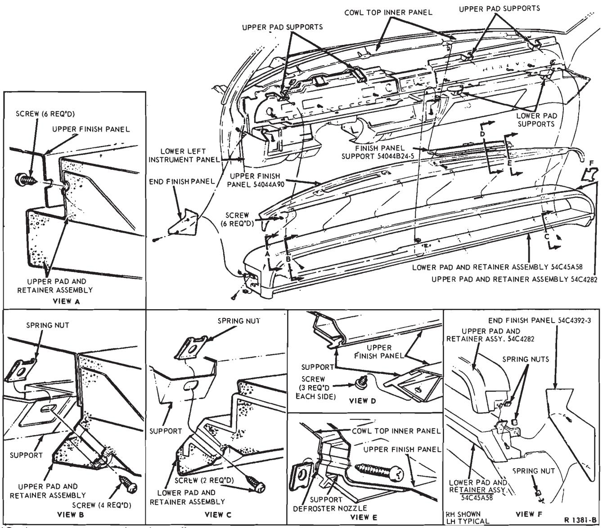
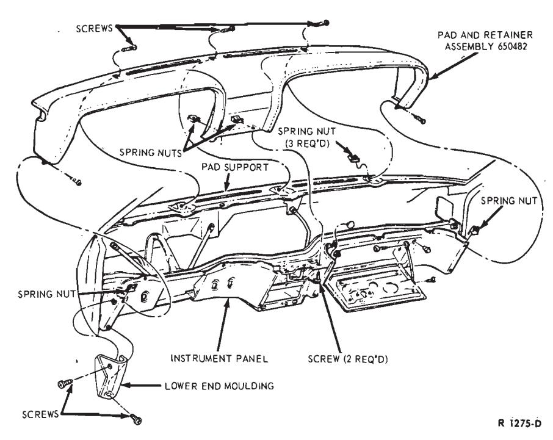
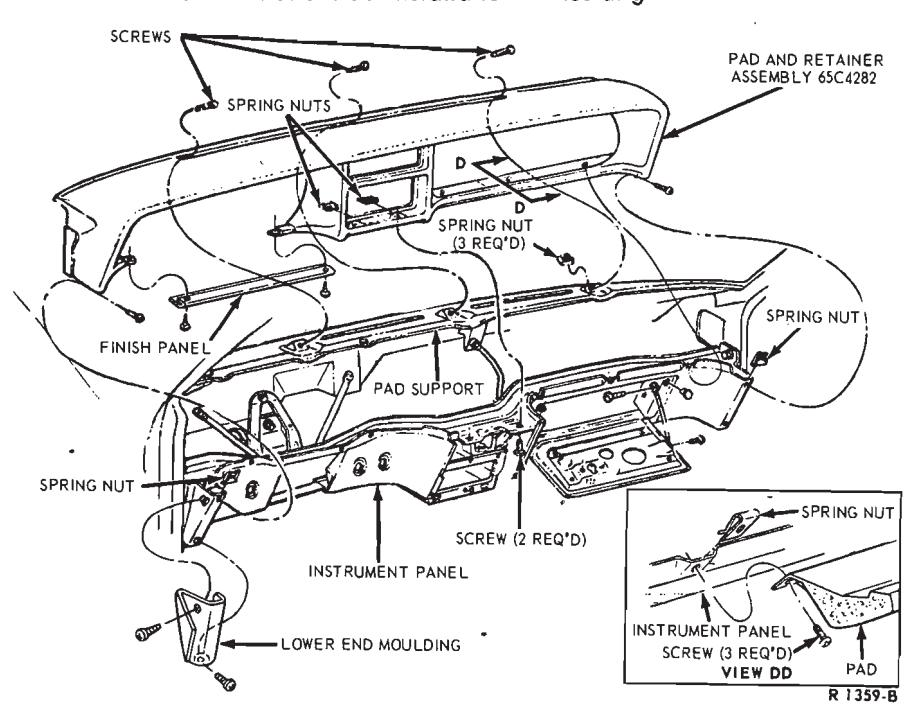
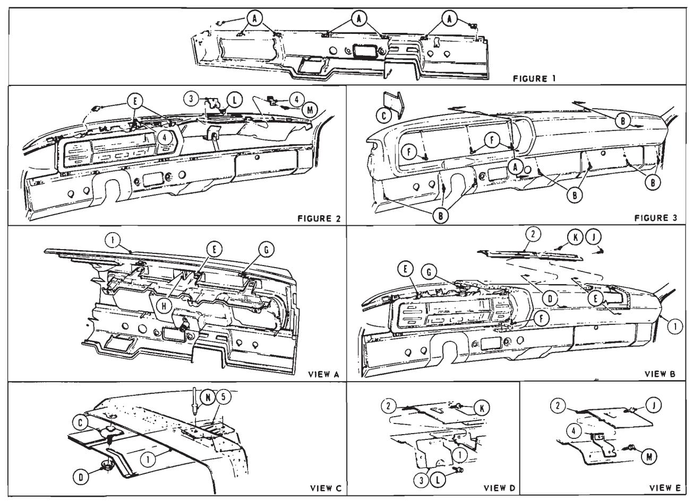
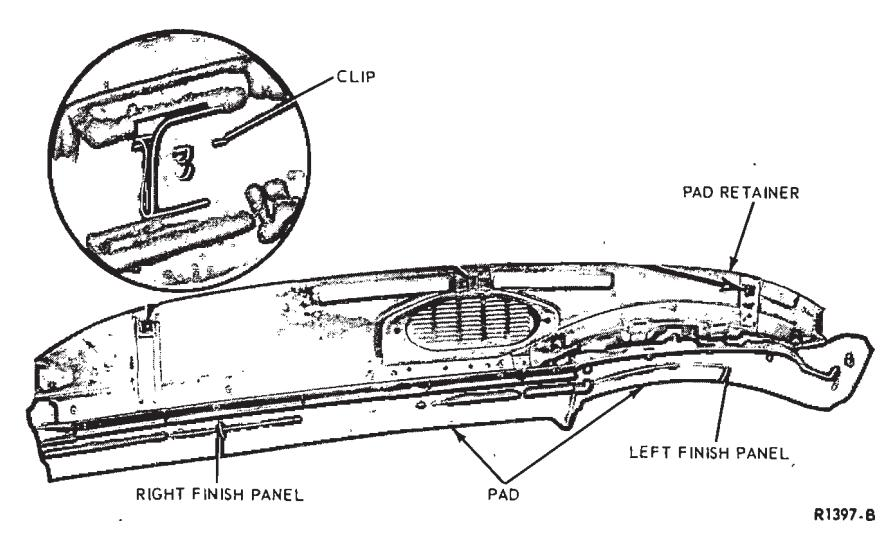
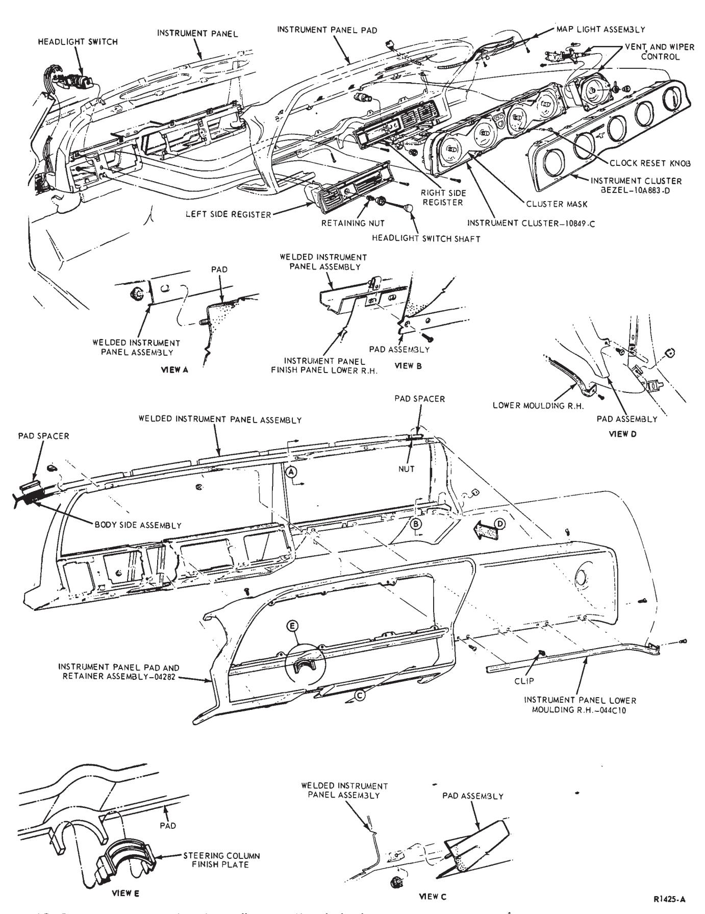
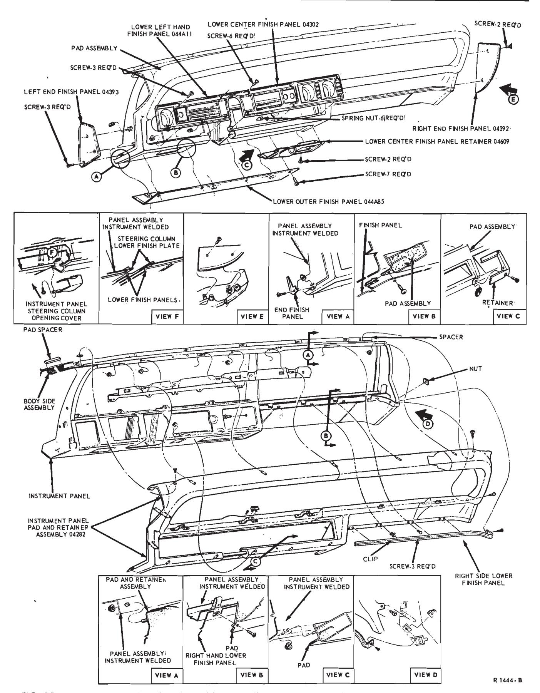

Headlining and Instrument Panels Pads · 47-03-04
Ford and Meteor
The instrument panel pad and retainer assembly (Fig. 3) is fastened across the front edge from left to right as follows: pad-to-cluster opening left finish panel (one screw and spring nut); pad-to-instrument panel (two screws and spring nuts); padto-cluster opening right finish panel (one screw and spring nut); and padto-instrument panel (three screws and spring nuts). Three retaining clips on the back edge of the pad engage three retainer plates that are riveted to the instrument panel. The back edge of the pad assembly is also fastened to the instrument panel by two screws and spring nuts at each defroster opening. Remove all eleven of these retaining screws, disconnect the radio speaker, and remove the pad from the instrument panel.
When installing the pad, be sure that all the spring nuts are properly positioned. Position the pad so that the retaining clips on the back edge engage the plates on the instrument panel.

Fig. 3 — Instrument Panel Pad Installation—Ford and Meteor
Mercury
Remove the windshield wiper knob and bezel, the cigar lighter element and the finish panel so that the instrument panel pad can be removed.
Remove the retaining screws and remove the left and right end finish panels. Remove the screw that attaches the lower pad to the upper pad at each end (View F, Fig. 4). Remove the screws that retain the upper finish panel to its support at each defroster opening (Views D and E), remove the six upper finish panel-to-pad screws (View A), and lift the upper finish panel from the supports and pad assembly.
Remove the four screws that attach the upper pad and retainer assembly to the pad supports (View B), and remove the upper pad assembly.
Remove the two screws that attach the right half of the lower pad and retainer assembly to the pad supports (View C), remove the screws that attach the left half of the lower pad to the lower left instrument panel, and remove the lower pad and retainer assembly.

Fig. 4 — Instrument Panel Pad Installation—Mercury
When installing the pad, be sure that all the spring nuts are properly positioned as shown in Fig. 4.
Mustang
Remove the right and left lower end mouldings (two screws each) for access to the retaining screws at the lower ends of the pad (Fig. 5). Remove the pad assembly retaining screws as follows: top inner edge of pad-to-pad support (three), right and left lower pad end-to-instrument panel (two); and lower center pad-to-instrument panel (two). Remove the pad and retainer assembly.
On Grande models, the clock wires will have to be disconnected before removing the pad. On models where the courtesy light is attached to the pad, the light wire has to be disconnected before pad removal.
When installing the pad make sure that all spring nuts are properly positioned as shown in Fig. 5.

Fig. 5 — Instrument Panel Pad Installation—Mustang
Cougar
Remove the cluster opening finish panel from the pad assembly below the instrument cluster (two screws).
Remove the right and left lower end mouldings (two screws each) for access to the pad retaining screws at the lower ends of the instrument panel (Fig. 6). Remove the pad retaining screws as follows: top inner edge of pad-to-pad support (three); right and left lower pad end-to-instrument panel (two); lower center pad-to-instrument panel (two); and lower right pad-to-instrument panel (three).
Pull the pad assembly back, disconnect the clock and courtesy light wires behind the right side of the pad, and remove the assembly.
On XR7 models, disconnect the multiple connector behind the center of the pad before removing the pad.
When installing the pad make sure that all the spring nuts are properly positioned as shown in Fig. 6.

Fig. 6 — Instrument Panel Pad Installation—Cougar
Falcon
Removal
- Open the glove compartment door and remove the glove compartment retaining screws. Remove the glove box.
- Reaching through the glove compartment opening, remove the nut which retains the pad to the instrument panel.
- Remove the retaining screws along the lower right of the pad and the retaining screws above the instrument cluster (Fig. 7). Raise the pad assembly, disconnect the radio speaker wires and remove the pad assembly.
Installation
-
If the pad assembly is being replaced, transfer the radio speaker and the pad retaining clips to the new pad assembly.
-
Position the pad to the instrument panel. Connect the radio speaker to the radio.
-
Install the pad retaining screws.
-
Position the glove compartment and install the glove compartment retaining screws.

Fig. 7 — Instrument Panel Pad Installation—Falcon
Maverick
Removal
- If the vehicle is equipped with air conditioning, remove the A/C grille by removing the two retaining screws.
- Remove the instrument cluster (See Group 33).
- Pull off the heater and air conditioner control knobs. Then carefully pry off the control bezel. Remove the control retaining screws and position the assembly forward.
- Remove the headlight switch stem and bezel (See Group 33). Then position the switch forward.
- If equipped with A/C, remove the utility shelf by removing the center screw and two bolts on each side (right and left).
- Reach behind the instrument panel from underneath. From each end of the pad (right and left) remove the pad-to-instrument panel retaining screw.
- From underneath the instrument panel remove the (9) retaining nuts from the instrument panel pad studs. These are located along the edge of the instrument panel closest to the seats. Remove the pad.
Installation
- Position the instrument panel pad to the vehicle with the studs in their respective locating holes. Install the (9) retaining nuts and (2) screws.
- Install the utility shelf.
- Position the headlight switch to the instrument panel and install the bezel and stem (See Group 33).
- Install the heat control, bezel and knobs.
- Install the instrument cluster assembly (See Group 33).
- Install the air conditioning grille (if so equipped).
Maverick Utility Shelf
Removal
- Remove the retaining screws from both sides of the shelf.
- Hold the shelf steady so that it will not break at the center retaining screw. Remove the center retaining screw and remove the shelf from the vehicle.
Installation
- Position the shelf to the instrument panel and install the center retaining screw loosely.
- Install the retaining screws at both ends of the shelf. Tighten all screws tightly, but do not overtighten.
Fairlane
Remove one retaining screw from the lower edge of the pad at the left of the instrument cluster. Remove five pad-to-instrument panel screws across the bottom edge of the pad to the right of the cluster. Pull the pad and retainer assembly free from the clips on the instrument panel. Disconnect the speaker and remove the pad and retainer assembly from the instrument panel.
If the pad is being replaced, transfer the left finish panel (located above the cluster-six retaining screws), the right finish panel (five screws), and the pad retainer (six nuts) to the new pad (Fig. 8). Also transfer the name plate and the two clips at the cluster opening.
When installing either a new or the original pad and retainer assembly, replace the three clips that had to be distorted when the assembly was removed. Connect the speaker and push the assembly to the instrument panel so that the three clips on the pad assembly engage the three clips on the panel. Install the retaining screws.
Montego
Remove the glove box for access and remove the heater control panel (two retaining screws). At the same time disconnect the wires to the two light bulbs in the heater control. Remove the left finish panel from the pad (two retaining screws). Remove four retaining screws at the lower right side and one screw at the far left side of the instrument panel pad. Pull the pad and retainer assembly free from the clips on the instrument panel. Disconnect the radio speaker and remove the pad assembly.
On Cyclone models it will also be necessary to disconnect the feed plugs to the auxiliary cluster and tachometer before removing the pad.

Fig. 8 — Instrument Panel Pad and Retainer Assembly—Fairlane Shown, Montego Typical
Before installing the pad and retainer assembly, replace the three clips that were distorted during removal (Fig. 8).
Thunderbird
Removal
- Disconnect the battery ground cable from the battery.
- Remove the front retaining screw from the right and left roof side garnish mouldings.
- Remove the upper windshield garnish moulding retaining screws and remove the moulding.
- Remove the windshield side moulding pad retaining screws and remove the pads.
- Remove the radio front speaker grille. (The grille is retained by means of snap fasteners).
- Remove the instrument panel left and right end finish panel retaining screws and remove the end finish panels (Fig. 9).
- Remove the right side instrument panel lower moulding (unsnap).
- Remove the left lower instrument panel access panel retaining screws and remove the access panel.
- Remove the cover retaining screws from under the steering column and remove the steering column lower cover.
- Remove the instrument cluster bezel retaining screws (5) and remove the cluster bezel.
- Remove the clock re-set knob. Remove the instrument cluster mask retaining snap-in fasteners (8) and remove the mask.
- Remove the speedometer head assembly retaining screws and remove the speedometer head by pulling it straight out.
- Remove the screws which retain the speedometer housing to the cluster body and remove the plastic end from the cable. (If equipped with a speed control, it is necessary to disconnect the cable at the speed control unit.)
- Remove the eight screws which retain the instrument cluster to the instrument panel and three screws which retain the vent and wiper control. Position the vent and wiper control outward, Disconnect the instrument cluster wiring connector from the instrument cluster and remove the cluster assembly.
- Remove the headlight switch shaft and the headlight switch retaining nut.
- Remove the three screws which retain the left side register to the instrument panel and remove the register.
- Remove the radio knobs. Remove the six screws which retain the right side register assembly to the instrument panel and remove the register.
- Remove the two screws which retain the map light assembly. Disconnect the map light wiring connector and remove the map light.
- If equipped with console: Remove the upper and lower right side console finish moulding retaining screws. Unsnap and remove the mouldings. Remove three front console applique retaining screws.
- Remove the instrument panel glove box liner retaining screws and remove the liner. Disconnect the air hose from the right side air duct.
- Using an offset screwdriver, remove the two screws which retain the instrument panel pad at the upper right and left corners (near the windshield lower pinchweld flange).
- Remove the cover retaining nuts from the lower left side of the pad.
- Remove one nut and bolt which retain the radio at the front; also, remove one nut which retains the radio at the rear. Position the radio back into the instrument panel recess to provide access to the pad retaining nuts near the radio area.
- Remove the three lower pad retaining nuts to the right of the steering column near the radio area.
- Remove four screws which retain the cover along the lower right side and one screw from the lower right end of the cover.
- Remove the five nuts which retain the cover assembly across the top of the instrument panel. Remove the cover from the instrument panel.
Installation
-
Transfer the right air duct connector assembly to the new pad.
-
Transfer the section which surrounds the instrument cluster area to the new pad assembly.
-
Position the pad assembly to the instrument panel.
-
Install the ten nuts (Fig. 9) which are used to retain the pad assembly to the instrument panel.
-
Install the four retaining screws along the lower right side and the retaining screw at the right end of the pad (Fig. 9).
-
Position the radio and install the retaining bolt and two nuts.
-
Install the two screws which retain the cover at the top corners near the windshield pinchweld flange.
-
Connect the air hose to the duct on the right side and install the glove box liner.
-
If equipped with console: Install the console finish panel retaining screws and the console mouldings.
-
Snap the lower right instrument panel moulding into place.
-
Position the map light assembly to the instrument panel. Connect the map light wiring connector and install the assembly retaining screws.
-
Position the radio grille to the instrument panel. Install the radio knobs and the grille retaining screws.
-
Position the left side instrument panel register. Install the register retaining screws. Position the headlight switch in the register. Install the headlight switch retaining nut, bezel and switch shaft.

Fig. 9 — Instrument Panel Pad Installation—Thunderbird -
Position the instrument panel end finish panels and install the end finish panel retaining screws (Fig. 9).
-
Install the pillar moulding pads and retaining screws. Position the roof side garnish mouldings and install the garnish moulding retaining screws. Position the windshield header mouldings and install the retaining screws.
-
Install (snap into place) the radio speaker grille.
-
Position the instrument cluster to the instrument panel. Connect the main wiring loom connector to the cluster, position the speedometer cable, install the speedometer cable plastic retainer and then install the eight cluster retaining screws.
-
Install the two speedometer cable connector retaining screws.
-
Position the speedometer head in the cluster and install the three speedometer head retaining screws.
-
Position the windshield wiper control. Install the cable retaining clip and the pad retaining screws.
-
Position the instrument cluster mask to the cluster and install the eight snap-in retainers. Install the clock knob.
-
Position the instrument cluster bezel to the cluster and install the five bezel retaining screws.
-
Position the steering column lower cover and install the two retaining screws.
-
Position the left lower instrument panel access plate and install the eight retaining screws.
-
Connect the battery cable to the battery and check operation of instruments and controls.
Continental Mark III
Removal
- Disconnect the battery ground cable from the battery.
- Remove the front retaining screw from the right and left roof side garnish mouldings (Fig. 10, Part 47-02).
- Remove the upper windshield garnish moulding retaining screws and remove the moulding (Fig. 10, Part 47-02).
- Remove the windshield side moulding pad retaining screws and remove the pads (Fig. 10, Part 47-02).
- Remove the radio front speaker grille. (The grille is retained by means of snap fasteners).
- Remove the instrument panel left and right end finish panel retaining screws and remove the end finish panels (Fig. 10).
- Remove the screw from the right end of the right lower finish panel, unfasten the retaining clip, and remove the finish panel.
- Remove the instrument panel lower outer finish panel retaining screws and remove the finish panel.
- Remove the retaining screws and the lower center finish panel retainer.
- Remove the lower center finish panel.
- To remove the lower left hand finish panel, remove three retaining screws from the panel and one retaining nut from behind the instrument panel.
- Remove the cover retaining screws from under the steering column and remove the steering column lower cover (Fig. 10).
- Remove the instrument cluster bezel retaining screws (5) and remove the cluster bezel.
- Remove the clock re-set knob. Remove the instrument cluster mask retaining snap-in fasteners (8) and remove the mask.
- Remove the speedometer head assembly retaining screws and remove the speedometer head by pulling it straight out.
- Remove the screws which retain the speedometer housing to the cluster body and remove the plastic end from the cable (If equipped with a speed control, it is necessary to disconnect the cable at the speed control unit).
- Remove the eight screws which retain the instrument cluster to the instrument panel and three screws which retain the vent and wiper control. Position the vent and wiper control outward. Disconnect the instrument cluster wiring connector from the instrument cluster and remove the cluster assembly.
- Remove the headlight switch shaft and the headlight switch retaining nut.
- Remove the three screws which retain the left side register to the instrument panel and remove the register.
- Remove the radio knobs. Remove the six screws which retain the right side register assembly to the instrument panel and remove the register.
- Remove the two screws which retain the map light assembly. Disconnect the map light wiring connector and remove the map light.
- Remove the instrument panel glove box liner retaining screws and remove the liner. Disconnect the air hose from the right side air duct.
- Using an offset screwdriver, remove the two screws which retain the instrument panel pad at the upper right and left corners (near the windshield lower pinchweld flange).
- Remove one nut and bolt which retain the radio at the front; also, remove one nut which retains the radio at the rear. Position the radio back into the instrument panel recess to provide access to the pad retaining nuts near the radio area.
- From behind the instrument panel, remove the five pad retaining nuts along the left lower edge of the panel (Fig. 10).
- Remove four screws which retain the pad along the right lower edge and one screw from the lower right end of the instrument panel.
- Remove the five nuts which retain the pad assembly to the upper edge of the instrument panel. Remove the pad from the instrument panel (Fig. 10).
Installation
-
Transfer the right air duct connector assembly to the new pad.
-
Transfer the section which surrounds the instrument cluster area to the new pad assembly.
-
Position the pad assembly to the instrument panel.
-
From behind the instrument panel, install five pad retaining nuts across the upper edge of the panel and five nuts along the left lower edge (Fig. 10).
-
Install the four pad retaining screws along the right lower edge and the retaining screw at the right end of the pad.
-
Position the radio and install the retaining bolt and two nuts.
-
Install the two screws which retain the pad to the instrument panel at the top corners near the windshield pinchweld flange.
-
Connect the air hose to the duct on the right side and install the glove box liner.
-
Position the map light assembly to the instrument panel. Connect the map light wiring connector and install the assembly retaining screws.
-
Position the radio grille to the instrument panel. Install the radio knobs and the grille retaining screws.
-
Position the left side instrument panel register. Install the register retaining screws. Position the headlight switch in the register. Install the headlight switch retaining nut, bezel and switch shaft.

Fig. 10 — Instrument Panel Pad and Moulding Installation—Continental Mark III -
Position the instrument cluster to the instrument panel. Connect the main wiring loom connector to the cluster, position the speedometer cable, install the speedometer cable plastic retainer and then install the eight cluster retaining screws.
-
Install the two speedometer cable connector retaining screws.
-
Position the speedometer head in the cluster and install the three speedometer head retaining screws.
-
Position the windshield wiper and vent control. Install the retaining screws and the control cable retaining clip.
-
Position the instrument cluster mask to the cluster and install the eight snap-in retainers. Install the clock knob.
-
Position the instrument cluster bezel to the cluster and install the five bezel retaining screws.
-
Position the steering column lower cover and install the two retaining screws.
-
Position the lower left hand finish panel and secure with three retaining screws. Install one retaining nut behind the instrument panel (Fig. 10).
-
Install the lower center finish panel and retaining screws.
-
Install the lower center finish panel retainer and attaching screws.
-
Position the lower outer finish panel and install the eight retaining screws.
-
Snap the right lower finish panel into place and install the retaining screw at the right end of the finish panel.
-
Position the instrument panel left and right end finish panels and install the end finish panel retaining screws (Fig. 10).
-
Install (snap into place) the radio speaker grille.
-
Install the windshield side moulding pads and retaining screws. Install the windshield upper garnish moulding and retaining screws (Fig. 10, Part 47-02). Install the front retaining screw to the left and right roof side garnish mouldings (Fig. 11, Part 47-02).
-
Connect the battery cable to the battery and check operation of instruments and controls.